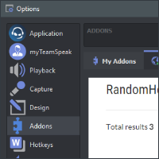

Stay in sync
In order to benefit from automatic updates, it is recommended to install add-ons via the Addons section within the TeamSpeak 3 client's Options window.
Create a myTeamSpeak account to sync your chosen add-ons and settings across all your devices.

Other Versions
Alternative package versions including combined style / icon pack bundles and older releases can be found on GitHub.